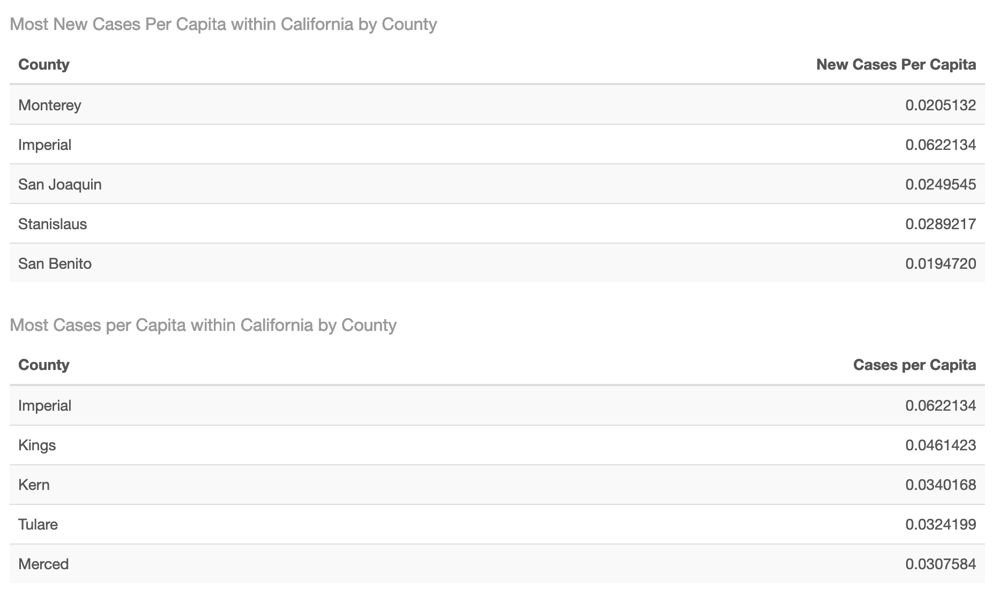
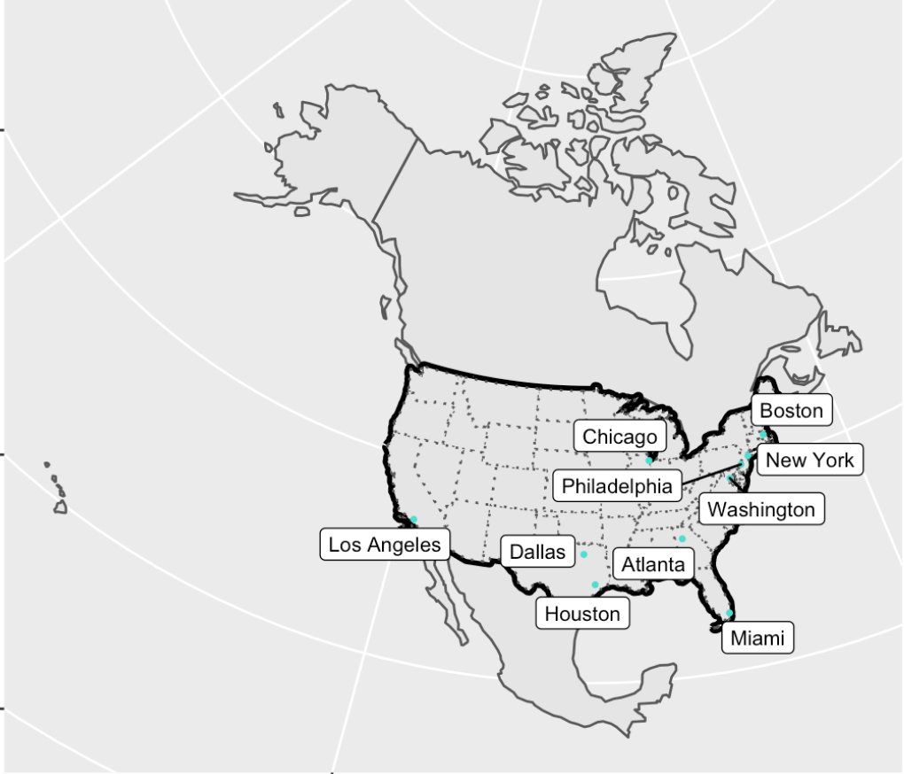
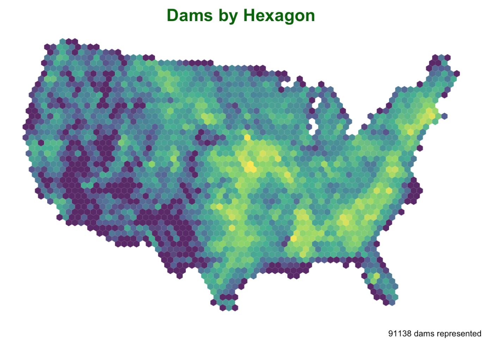
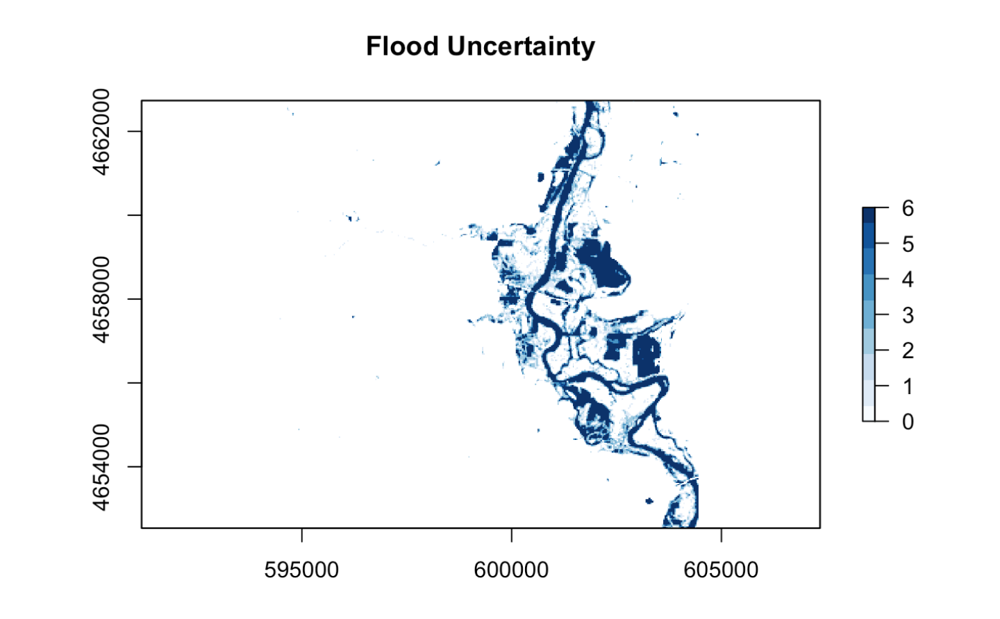
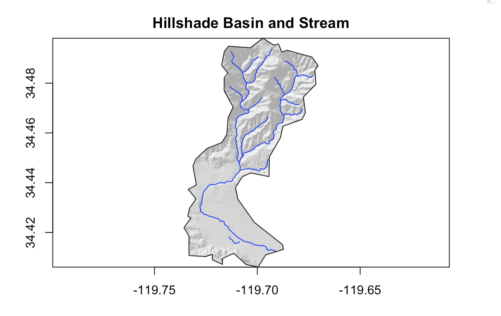

In the summer before my senior year of college, I took a GIS course that allowed me to learn about R and its applications, especially in relation to GIS. Below I have accumulated links to all of my projects that exemplify the skills I have learned over these trying weeks.
Lab 01: Data Science Workflows
For our first lab assignment, I was instructed to build individualized websites.
- I first had to understand how to properly link my code within RStudio to Github, including my repository.
- I had to learn about different functions for creating a website, such as inserting hyperlinks.
- I had to make the website my own with personalized details, and I am proud of what I have created.
Lab 02: Data Wrangling
For our second lab assignment, I took actual data about covid cases and manipulated the data for analysis.

- I found this week’s lab particularly challenging, but I was able to effectively mutate new variables, such as cases per capita, in order to explore the data from new perspectives.
- I was also able to join two data sets together in order to consolidate multiple aspects, allowing me to expand my analysis or understanding.
- I also created multiple graphs, both faceted or unfaceted, that allowed me to represent information through an organized and visual medium.
Lab 03: Projections, Distances, and Mapping
Our third lab helped us to explore spatial data visually as I viewed cities and their distances to borders.

- The main focus of our lab this week was to compare the distances between different places, this is helpful as the majority of citizens within the United States live near a border.
- I first had to define the boundaries of CONUS and its surrounding states, and then lay over the cities.
- Next, I compared the distances between different states, Mexico, and Canada, which allowed me to test our skills through recreating similar maps.
- I then studied a real world application as I explored how there may be different laws closer to borders. Our ability to spatially represent the populations of cities and their distances to borders then gains applicable knowledge.
Lab 04: Tesselations, Spatial Joins, and Point-in-Polygon
Next, I learned another way to visualize data through tesselations.

- I learned how to code different tesselations with or without anchor points.
- I understand the different types of tesselations and how I can interpret information through different forms.
- I then applied my knowledge to real world situations where we analyzed the different reasons for dams and was able to analyze their locations.
Lab 05: Raster Analysis
My penultimate lab addressed raster stacks and how to work with them.

- This lab tested our skills with what I already knew as to identify an AOI, I first needed to know how to read in csv data, structure it spatially with sf and CRS, filter it, and then finally transform the projection.
- I then used the getlandsat package to filter our data to specifically target scenes that match my date and bounding box.
- Using the landsat images allows me to view the terrain with aspects not visible to the naked eye, so I have more information that can be isolated to analyze.
Lab 06: Terrain Analysis
My final lab!

- I had a lot of difficulties with this lab and it’s code, but I did my best to work through the issues to the best of my ability.
- We first had to find the flood data and then filter it to a form that is conducive to my desired form of analysis.
- This lab taught me how to analyze flood risks by running simple raster analysis that give a lot of depth.